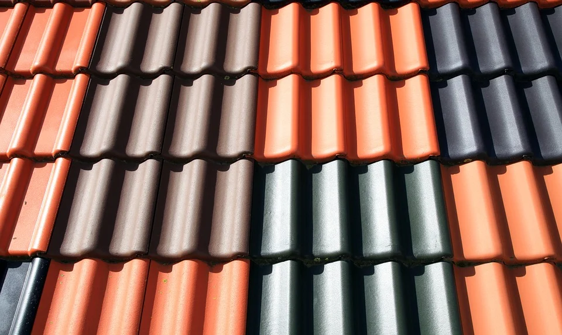
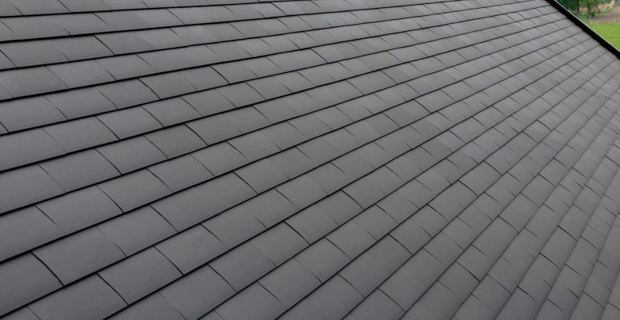
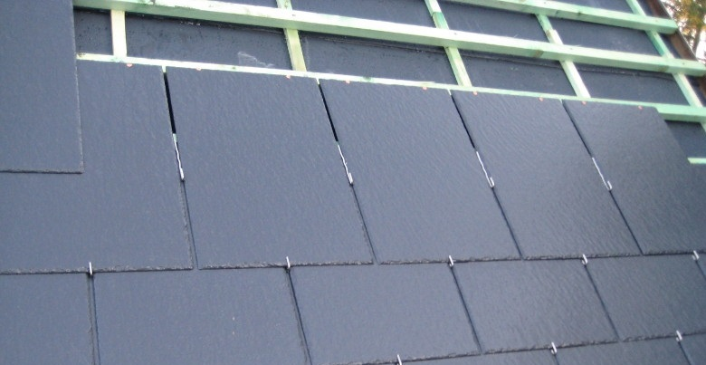

<!DOCTYPE html>
<html lang="en">

<head>
    <meta charset="utf-8" />
    <meta name="viewport" content="width=device-width, initial-scale=1, shrink-to-fit=no" />
    <meta name="description" content="" />
    <meta name="author" content="" />
    <title>AD Roofconstruct</title>
    <link rel="icon" type="image/x-icon" href="img/logo.jpeg" />
    <!-- Font Awesome icons (free version)-->
    <script src="https://use.fontawesome.com/releases/v5.13.0/js/all.js" crossorigin="anonymous"></script>
    <!-- Google fonts-->
    <link href="https://fonts.googleapis.com/css?family=Montserrat:400,700" rel="stylesheet" type="text/css" />
    <link href="https://fonts.googleapis.com/css?family=Droid+Serif:400,700,400italic,700italic" rel="stylesheet" type="text/css" />
    <link href="https://fonts.googleapis.com/css?family=Roboto+Slab:400,100,300,700" rel="stylesheet" type="text/css" />
    <!-- Core theme CSS (includes Bootstrap)-->
    <link href="css/styles.css" rel="stylesheet" />
    <link rel="stylesheet" href="css/style.css">
</head>

</html>

<body id="sidepages">
    <!-- Navigation-->
    <nav class="navbar navbar-expand-xl navbar-dark fixed-top navbar-shrink" id="mainNav">
        <div class="container-fluid px-5">
            <a class="navbar-brand js-scroll-trigger" href="index.html">AD Roofconstruct</a>
            <button class="navbar-toggler navbar-toggler-right" type="button" data-toggle="collapse" data-target="#navbarResponsive" aria-controls="navbarResponsive" aria-expanded="false" aria-label="Toggle navigation">
                    Menu
                    <i class="fas fa-bars ml-1"></i>
                </button>
            <div class="collapse navbar-collapse" id="navbarResponsive">
                <ul class="navbar-nav text-uppercase ml-auto">
                    <li class="nav-item"><a class="nav-link js-scroll-trigger" href="index.html">Home</a></li>
                    <li class="nav-item"><a class="nav-link js-scroll-trigger" href="schuineDaken.html">Schuine Daken</a></li>
                    <li class="nav-item"><a class="nav-link js-scroll-trigger" href="platteDaken.html">Platte Daken</a></li>
                    <li class="nav-item"><a class="nav-link js-scroll-trigger" href="dakgoten.html">Dakgoten</a></li>
                    <li class="nav-item"><a class="nav-link js-scroll-trigger" href="lichtkoepels.html">Lichtkoepels/Velux</a></li>
                    <li class="nav-item"><a class="nav-link js-scroll-trigger" href="terras.html">Terras</a></li>
                    <li class="nav-item"><a class="nav-link js-scroll-trigger" href="renovaties.html">Renovaties</a></li>
                    <li class="nav-item"><a class="nav-link js-scroll-trigger" href="realisaties.html">Realisaties</a></li>
                    <li class="nav-item"><a class="nav-link js-scroll-trigger" href="index.html#contact">Contact</a></li>
                </ul>
            </div>
        </div>
    </nav>

    <header class="masthead2">
        <div class="container">
        </div>
    </header>

    <section class="section-page ">
        <div class="container">
            <div class="row d-flex align-items-center">
                <div class="col-lg-6 text-center ">
                    <h2 class="text-uppercase">Schuine daken</h2>
                    <hr class="mb-5">
                    <p class="text-justify px-5">Net als een fundering is uw dak een belangrijke basis om op verder te bouwen. Een energiezuinige woning bekomt u met een goed geïsoleerde en luchtdichte dakconstructie. Voor onze schuine daken maken we uiteraard gebruik van de beste
                        materialen. Onze kwalitatieve dakwerken verlopen onder het vakkundige oog van onze professionele vakmannen. </p>
                </div>
                <div class="col-lg-6 text-center p-5">
                    
                </div>
            </div>
        </div>
    </section>


    <section class="section-page">
        <div class="container">
            <div class="row d-flex align-items-center">
                <div class="col-lg-6 text-center p-5">
                    
                </div>
                <div class="col-lg-6 text-center ">
                    <h2 class="text-uppercase">Pannen</h2>
                    <hr>
                    <p class="text-justify px-5">Pannen zijn zonder twijfel de meest voorkomende dakbedekking in België. Ze worden al honderden jaren gebruikt en hebben intussen hun nut al goed bewezen. Of het nu gaat om kleur, grootte of vorm, een dakpan biedt voor ieder wat wils.
                        Een typisch rode gegolfde pan staat nooit verkeerd op een klassieke woning, terwijl een platte antraciet pan gegeerd is op het moderne dak. </p>
                </div>

            </div>
        </div>
    </section>

    <section class="section-page ">
        <div class="container">
            <div class="row d-flex align-items-center">
                <div class="col-lg-6 text-center ">
                    <h2 class="text-uppercase">Tegelpannen</h2>
                    <hr class="mb-5">
                    <p class="text-justify px-5">Een tegelpan is een kleinere variant van de kleidakpan. Het stramien ervan is te vergelijken met dat van een lei. Bij renovaties moet er rekening gehouden worden met het hoge gewicht van tegelpannen. De bestaande dakstructuur moet
                        dit gewicht immers kunnen dragen. </p>
                </div>
                <div class="col-lg-6 text-center p-5">
                    
                </div>
            </div>
        </div>
    </section>

    <section class="section-page">
        <div class="container">
            <div class="row d-flex align-items-center">
                <div class="col-lg-6 text-center p-5">
                    
                </div>
                <div class="col-lg-6 text-center ">
                    <h2 class="text-uppercase">Leien</h2>
                    <hr>
                    <p class="text-justify px-5">Voor een strakker uitzicht kan je altijd kiezen voor leien. Die zijn niet alleen duurzaam, het gladde oppervlak maakt dat ze onderhoudsvrij zijn. Dankzij de verschillende maten en kleuren kan je het uitzicht van je dak naar jouw wens
                        bepalen. Dit maakt leien dan ook uitermate geschikt voor zowel nieuwbouw en renovatie. </p>
                </div>

            </div>
        </div>
    </section>


    <footer class="footer py-4">
        <div class="container-fluid">
            <div class="row align-items-center">
                <div class="col-lg-4 text-lg-left"><span id="year"></span> Copyright © Andrea Ravalli</div>
                <div class="col-lg-4 my-3 my-lg-0">
                    <a class="btn btn-dark btn-social mx-2" href="https://www.instagram.com/ad.roofconstruct/"><i class="fab fa-instagram"></i></a>
                    <a class="btn btn-dark btn-social mx-2" href="#!"><i class="fab fa-facebook-f"></i></a>
                    <!-- <a class="btn btn-dark btn-social mx-2" href="#!"><i class="fab fa-linkedin-in"></i></a> -->
                </div>
                <div class="col-lg-4 text-lg-right">
                    <p>Jay Aerts: +32 465 52 16 11 || Levi Desmaré: +32 479 07 77 95</p>
                    <p>Mail: ad.roofconstruct@gmail.com</p>
                </div>
            </div>
        </div>
    </footer>

    <script src="https://cdnjs.cloudflare.com/ajax/libs/jquery/3.5.1/jquery.min.js"></script>
    <script src="https://stackpath.bootstrapcdn.com/bootstrap/4.5.0/js/bootstrap.bundle.min.js"></script>
    <!-- Third party plugin JS-->
    <script src="https://cdnjs.cloudflare.com/ajax/libs/jquery-easing/1.4.1/jquery.easing.min.js"></script>
    <!-- Contact form JS-->
    <script src="assets/mail/jqBootstrapValidation.js"></script>
    <script src="assets/mail/contact_me.js"></script>
    <!-- Core theme JS-->
    <script src="js/scripts.js"></script>
    <script>
        $('#year').text(new Date().getFullYear());
    </script>
</body>